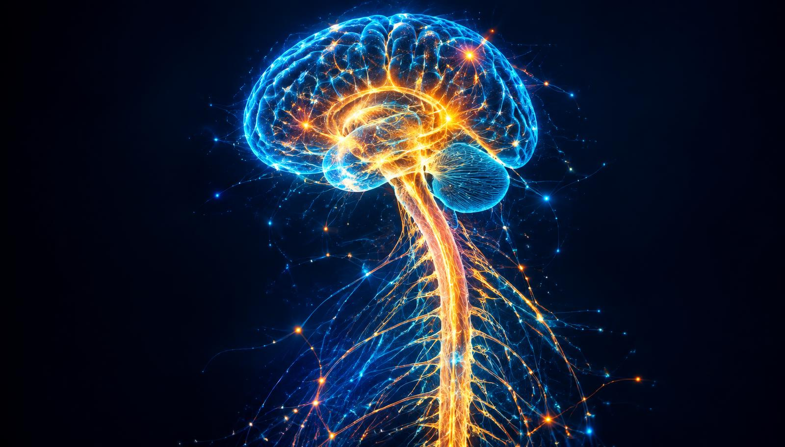
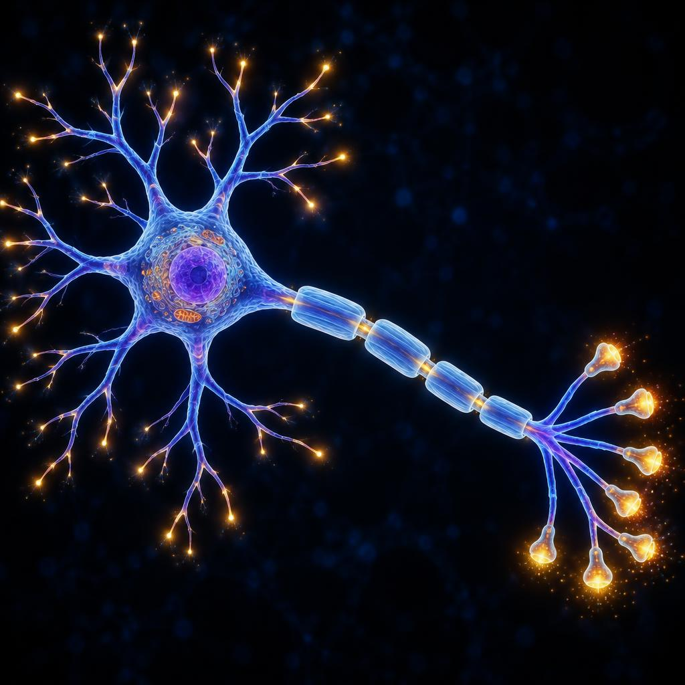
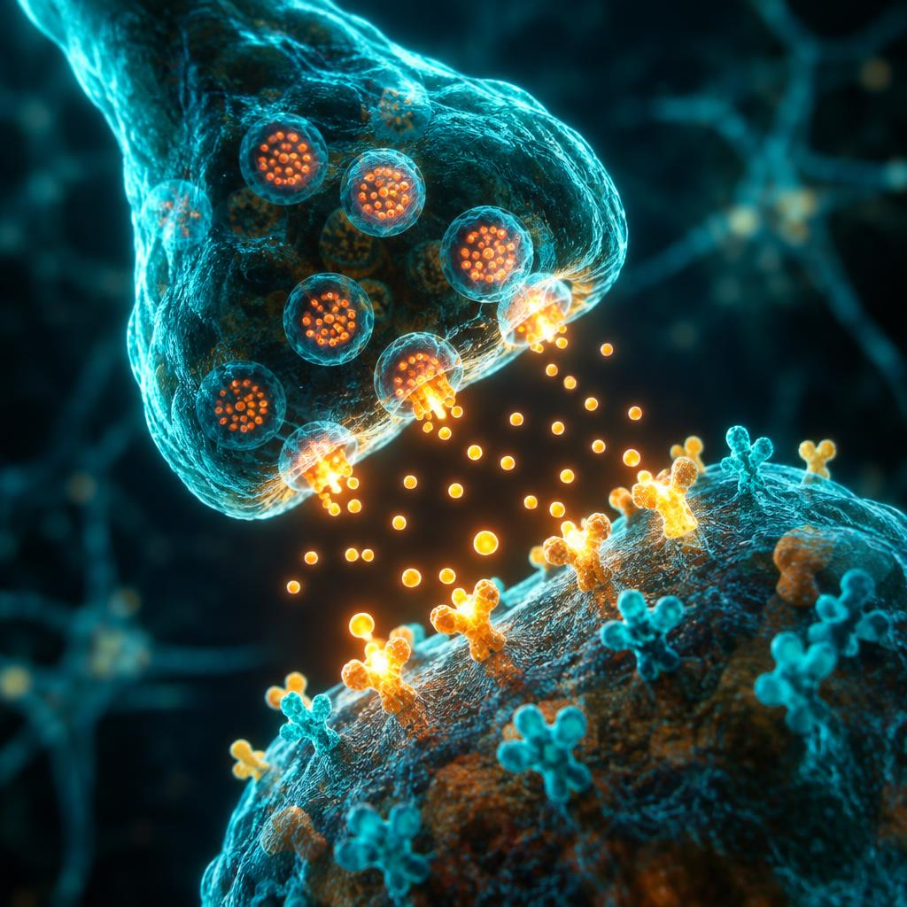
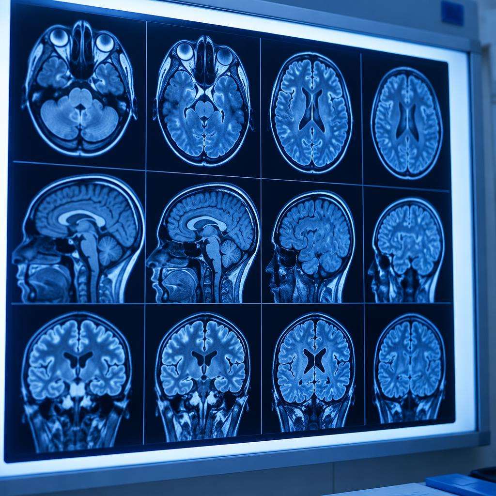

Uma viagem pela rede elétrica mais incrível da criação: 86 bilhões de neurônios que pensam, sentem, lembram e fazem você ser você.
Cada vez que você pisca, sente o cheiro do pão, lembra de um versículo ou tira a mão de uma panela quente, o sistema nervoso está trabalhando. Ele recebe informações (sensibilidade), processa (integração) e responde (motricidade) — tudo em frações de segundo.
Ele é dividido em duas grandes partes: o Sistema Nervoso Central (SNC), formado pelo encéfalo e pela medula espinhal, protegidos pelo crânio e pela coluna vertebral; e o Sistema Nervoso Periférico (SNP), formado pelos nervos (12 pares cranianos e 31 pares espinhais) e gânglios que ligam o SNC a todo o corpo.
“Eu te louvo porque me fizeste de modo especial e admirável.” — Salmo 139:14
Maior parte do encéfalo, dividido em dois hemisférios e quatro lobos (frontal, parietal, temporal e occipital). Responsável pelo pensamento, raciocínio, memória, linguagem, emoções, movimentos voluntários e interpretação dos sentidos.
Fica atrás e abaixo do cérebro. Coordena os movimentos, mantém o equilíbrio e a postura e ajusta a precisão dos gestos (andar de bicicleta, escrever, tocar um instrumento). Ajuda no aprendizado motor.
Parte do tronco encefálico, entre o mesencéfalo e o bulbo. Funciona como “ponte” de comunicação entre cérebro, cerebelo e medula; participa do controle da respiração, do sono, da mastigação e de expressões faciais.
Cordão de tecido nervoso dentro da coluna vertebral, com cerca de 45 cm. Conduz mensagens entre o encéfalo e o corpo e é o centro de muitos reflexos, que acontecem sem passar pelo cérebro.
💡 Dica para o diagrama/modelo: use massinha de modelar de cores diferentes (rosa para o cérebro, amarelo para o cerebelo, azul para a ponte e verde para a medula) e identifique cada parte com bandeirinhas de palito.

O neurônio é a célula especializada em receber, conduzir e transmitir impulsos nervosos (sinais elétricos e químicos).
Sinapse é o local de comunicação entre um neurônio e outra célula (outro neurônio, um músculo ou uma glândula). Os neurônios não se tocam: entre eles existe um pequeno espaço, a fenda sináptica.

Controla ações voluntárias — aquelas que você decide fazer — atuando nos músculos esqueléticos. Também leva ao SNC as informações dos sentidos (pele, olhos, ouvidos). Ex.: chutar uma bola, escrever, falar.
Controla ações involuntárias, que acontecem sem você pensar, nos músculos lisos, coração e glândulas. Ex.: batimentos cardíacos, digestão, suor, dilatação das pupilas. Divide-se em simpático e parassimpático.
| Função | Simpático — “luta ou fuga” | Parassimpático — “descanso e digestão” |
|---|---|---|
| Quando atua | Perigo, estresse, exercício, emoção forte | Repouso, calma, após refeições |
| Coração | Acelera os batimentos | Diminui os batimentos |
| Pupilas | Dilata | Contrai |
| Brônquios | Dilata (mais ar) | Contrai |
| Digestão | Inibe | Estimula (saliva, movimentos do intestino) |
| Bexiga | Relaxa (retém urina) | Contrai (esvaziamento) |
| Glicose e suor | Libera glicose, aumenta o suor, adrenalina | Armazena energia |
| Neurotransmissor principal | Noradrenalina | Acetilcolina |
As drogas agem justamente na comunicação entre neurônios, enganando o cérebro:
Com o uso repetido, o cérebro reduz seus próprios receptores e neurotransmissores (tolerância). Surge a dependência: sem a droga a pessoa sente abstinência, tristeza e ansiedade. Há perda de memória, de atenção, alterações de humor e até morte de neurônios.
Pela graça de Deus, eu me comprometo a nunca usar drogas — incluindo álcool, tabaco e qualquer substância que prejudique o templo que Ele me deu (1 Coríntios 6:19-20). Vou cuidar da minha mente para servir a Deus e ao próximo.
Assinatura do Desbravador
Data
Reflexo é uma resposta automática, rápida e involuntária a um estímulo, que acontece sem a participação consciente do cérebro. Ele nos protege (ex.: piscar quando algo se aproxima do olho).
Peça a alguém para sentar com as pernas soltas, sem os pés encostarem no chão. Com a lateral da mão ou um martelinho, dê uma batidinha suave no tendão logo abaixo da patela (rótula). A perna dá um “chute” para frente.
A batida estica o tendão e o músculo quadríceps. Receptores do músculo ativam um neurônio sensorial, que leva o impulso até a medula espinhal. Lá, ele faz sinapse diretamente com um neurônio motor, que manda o quadríceps contrair — e a perna se estende. Esse caminho é o arco reflexo. O cérebro só “fica sabendo” depois.
Porque avalia se nervos, medula espinhal e músculos estão funcionando. Reflexo ausente, fraco ou exagerado pode indicar lesões em nervos ou na medula, doenças neurológicas ou problemas metabólicos (como tireoide).
Neurônios sensoriais (aferentes) levam informações dos receptores (pele, olhos, ouvidos, língua, nariz, músculos) até o sistema nervoso central. Adaptação sensorial é a diminuição da resposta a um estímulo constante: os receptores param de “avisar” o cérebro sobre algo que não muda, para que possamos prestar atenção ao que é novo.
Ao colocar a tampa, você sente claramente o toque. Depois de um minuto, sem se mexer, quase não percebe mais. Os receptores de tato se adaptaram ao estímulo constante.
Ao passar para a água em temperatura ambiente, o dedo que estava na água fria sente a água morna; o que estava na água morna a sente fria. Cada dedo havia se adaptado a uma temperatura diferente.
Assim como deixamos de perceber um estímulo constante, podemos nos acostumar com o pecado e “não sentir” mais que ele é errado. Por outro lado, quem passa tempo com Jesus vai sendo transformado (2 Coríntios 3:18). Cuidado com o que você deixa se tornar “normal” — Romanos 12:2.
Eletrodos colocados no couro cabeludo registram a atividade elétrica do cérebro em forma de ondas (alfa, beta, teta, delta). É indolor e serve para diagnosticar epilepsia, distúrbios do sono, avaliar coma e morte encefálica.
A ressonância magnética usa um ímã potente e ondas de rádio (sem radiação) para formar imagens detalhadas do encéfalo e da medula — ótima para tumores, esclerose múltipla e hérnias de disco. A tomografia computadorizada usa raios X em vários ângulos; é rápida e muito usada em emergências, como AVC e traumatismos.
A anestesia local bloqueia os canais de sódio dos nervos de uma região, impedindo que o impulso de dor chegue ao cérebro. A raquidiana/peridural age nos nervos próximos à medula. A geral atua no cérebro, potencializando sinais inibitórios (GABA), causando inconsciência, ausência de dor e relaxamento muscular.

Conheça as principais condições do sistema nervoso — como ocorrem, fatores de risco, sinais e tratamento. Escolha duas para o seu relatório.
“E não vos conformeis com este século, mas transformai-vos pela renovação da vossa mente.” — Romanos 12:2
Cada pensamento repetido fortalece um caminho no cérebro. Escolher bons pensamentos (Filipenses 4:8) é, literalmente, construir um cérebro melhor.